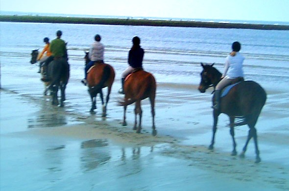

Cours et stages
CSO, dressage, concours complet et TREC, en cours particulier ou collectif. Passage des galops classiques et de pleine nature.
Découvrir les cours →Le plus ancien club de l'île d'Oléron
Au centre de l'île Lumineuse, à Dolus, l'Éperon Dolusien accueille les cavaliers de tous niveaux : cours, stages, poney-club, balades sur la plage et sorties en calèche.
100 km+de chemins balisés
20 minde la plage à cheval
20 hade terrain de cross

Chevaux de CSO, de dressage et de tourisme équestre, sans oublier les poneys : la cavalerie s'adapte à votre niveau, du premier galop à la compétition.
CSO, dressage, concours complet et TREC, en cours particulier ou collectif. Passage des galops classiques et de pleine nature.
Découvrir les cours →Séances de 2 h pendant les vacances scolaires, stages de 5 jours et baby-poney d'une demi-heure, poney tenu en main par les parents.
Voir le poney-club →Sur la plage, en forêt et dans les marais, pour débutants ou confirmés : 2 h, demi-journée avec petit-déjeuner, ou 2 jours avec hébergement.
Choisir sa balade →Sorties d'1 h 30 dans le marais de la Perroche et ses petits villages, cours d'attelage, et calèche de 7 places pour les mariages.
Réserver une sortie →Initiation à la compétition, coaching en concours et stages de perfectionnement en complet, dressage et CSO.
Rejoindre l'équipe →Pension au pré, au paddock ou au box. Demi-pension avec 2 h de cours par semaine et sorties seul à la plage dès le galop 5.
Tarifs propriétaires →Fabien Dodin, moniteur breveté d'État et ancien maître de manège du Centre sportif d'équitation militaire de Fontainebleau, dirige cette École Française d'Équitation. Il est entouré de cinq accompagnateurs de tourisme équestre.
Cotisations, licences, cours à l'année, stages cheval et pensions : tous les tarifs
Réserver une activitéAttenant au club, le Club DO réunit des gîtes et des suites rénovés en 2015 et 2016, sur 2 000 m² de terrain, à 800 m du centre de Dolus et 1,5 km de la plage de la Rémigeasse.
5 gîtes · 4 pers.Duplex avec mezzanine, kitchenette équipée et patio privatif de 20 m².
2 suites · 8 pers.Plusieurs pièces, pour venir en famille ou entre amis.